Лицо выглядит уставшим
Такое впечатление могут создавать тон кожи, рельеф, отёчность или сочетание нескольких изменений. На осмотре специалист уточняет причину, а не ориентируется только на формулировку жалобы.
4 технологии лифтинга
Брыли, дряблость кожи, неровный рельеф и второй подбородок требуют разного воздействия. Врач оценит состояние тканей и поможет выбрать подходящую технологию.
Почему метод подбирают после консультации
Такое впечатление могут создавать тон кожи, рельеф, отёчность или сочетание нескольких изменений. На осмотре специалист уточняет причину, а не ориентируется только на формулировку жалобы.
Изменение может быть связано с кожей, более глубокими тканями или локальным объёмом. От этого зависит, какое воздействие имеет смысл обсуждать.
Мелкие морщины и неровный рельеф требуют оценки состояния кожи. Метод и интенсивность воздействия выбирают с учётом чувствительности и ограничений.
Врач проверяет, связан ли запрос с локальным объёмом под подбородком, областью брылей, состоянием кожи или их сочетанием.
Особенности каждого типа лифтинга
Схемы показывают принцип воздействия в упрощённом виде. Показания, параметры и ожидаемый результат врач обсуждает после осмотра.
Сфокусированный ультразвук
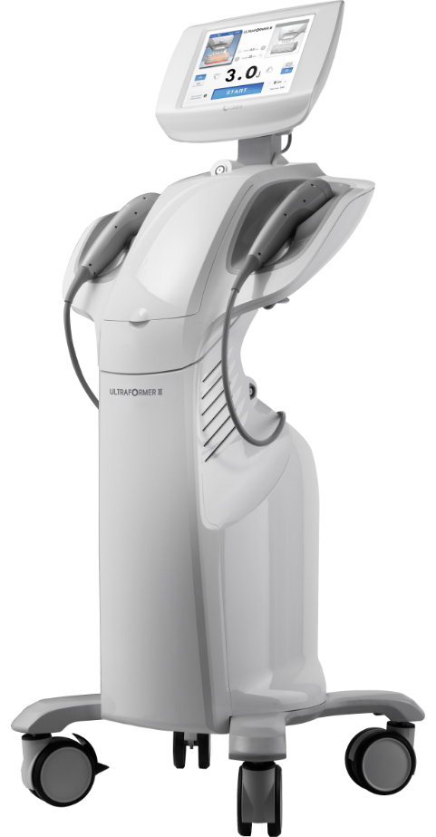
Сфокусированный ультразвук воздействует на глубокие ткани без проколов. Метод рассматривают при менее чётком овале; он не равен хирургической подтяжке.
Микроиглы и RF-энергия
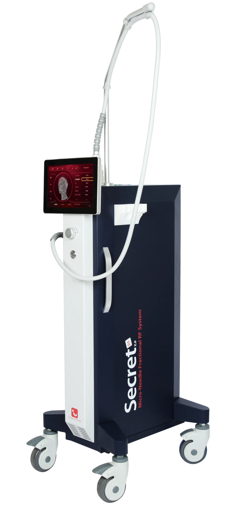
Микроиглы создают контролируемые проколы и доставляют RF-энергию на выбранный уровень. Метод обсуждают при снижении плотности, неровном рельефе и мелких морщинах.
Монополярный RF-лифтинг
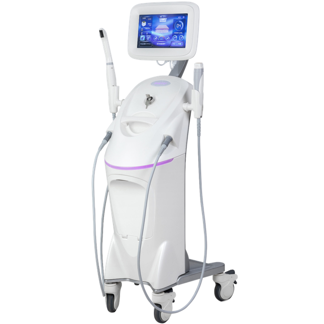
Монополярная RF-энергия объёмно прогревает кожу, дерму и подкожно-жировую клетчатку; нагрев сокращает коллагеновые волокна, при этом поверхность кожи остаётся неповреждённой. Метод обсуждают при рыхлости, брылях и нечётком овале.
Субдермальное лазерное воздействие
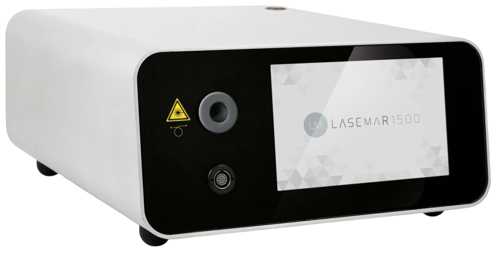
Тонкое оптическое волокно вводят под кожу через небольшой прокол. Метод могут рассматривать при локальном объёме под подбородком или в области брылей; применимость оценивается индивидуально.
Имеются противопоказания. Информация не заменяет очную консультацию. Показания, зону, параметры и ожидаемую выраженность результата обсуждают индивидуально.
Очная консультация
Реальные результаты
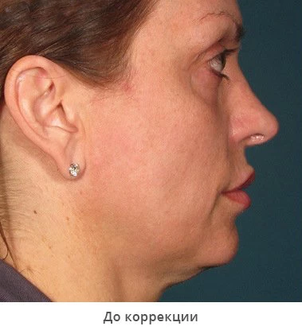
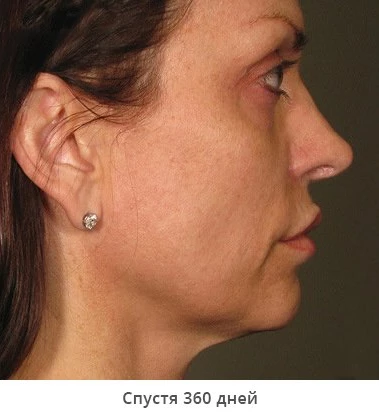
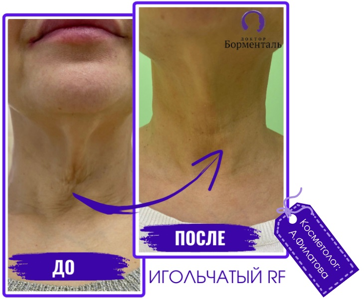
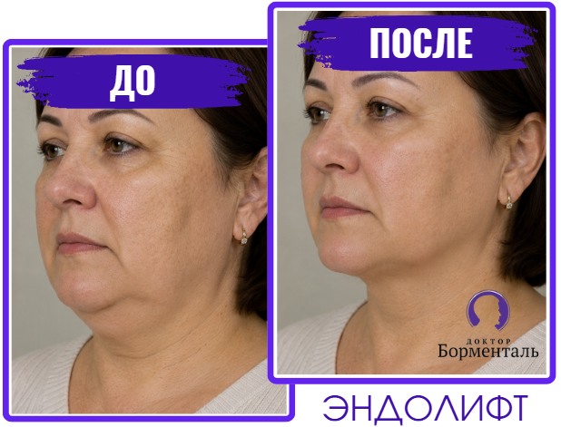
Результат индивидуален. Выраженность и срок оценки изменений зависят от исходного состояния тканей и персонального плана.
Наши врачи
В клинике работают сертифицированные врачи и косметологи с профильным медицинским образованием и дополнительной подготовкой.
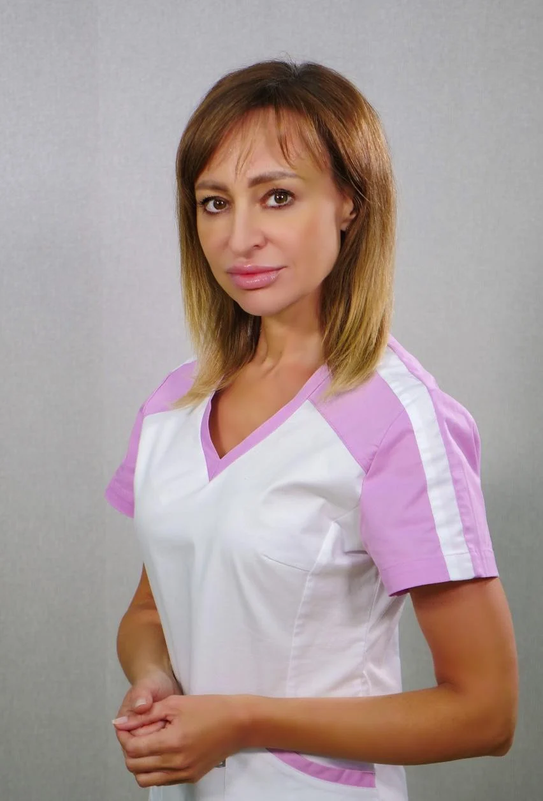
врач-косметолог, дерматолог
косметолог
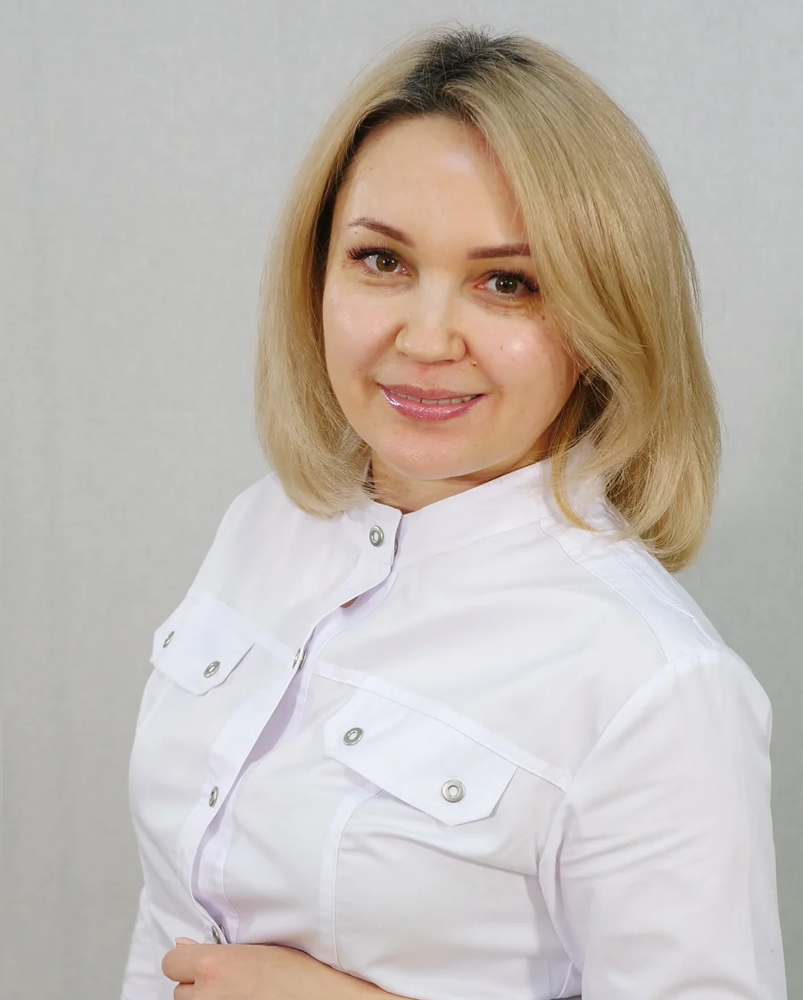
косметолог
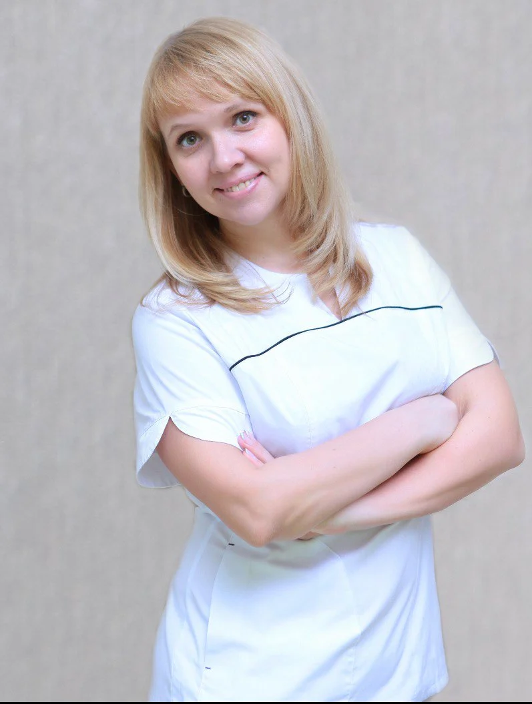
косметолог
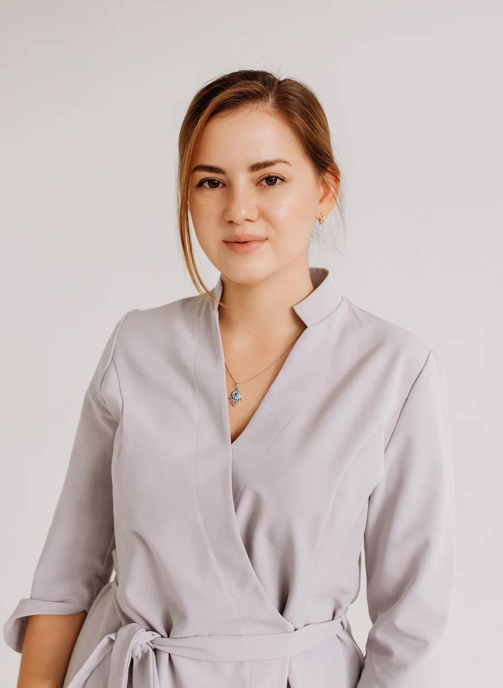
врач-косметолог, дерматолог
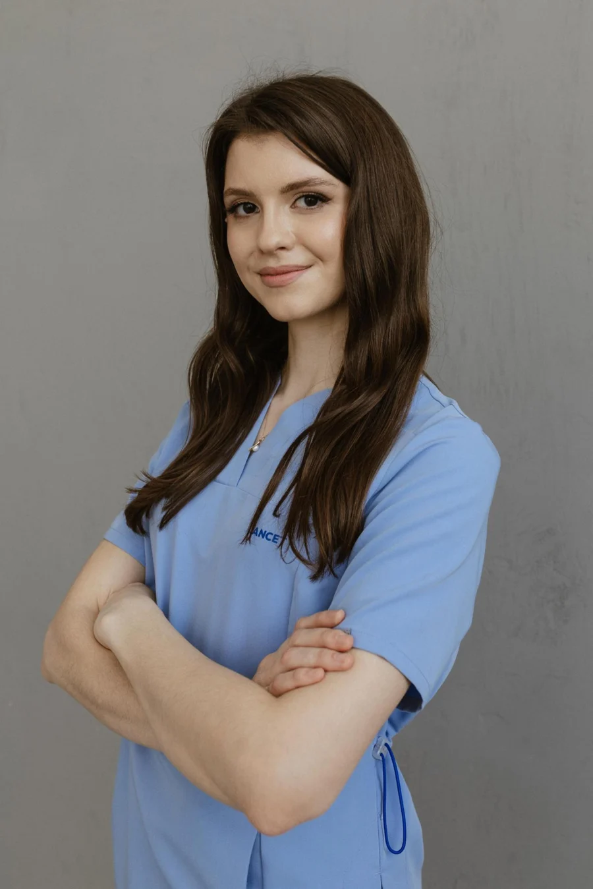
врач-дерматовенеролог
О клинике
Более 22 000 клиентов посетили косметологическую клинику. Здесь проводят медицинские косметологические процедуры и используют аппаратные методики, которые подбирают после очной оценки.
Самара, ул. Садовая, д. 335
ПН–ПТ 9:00–21:00; СБ 10:00–18:00; ВС 10:00–14:00
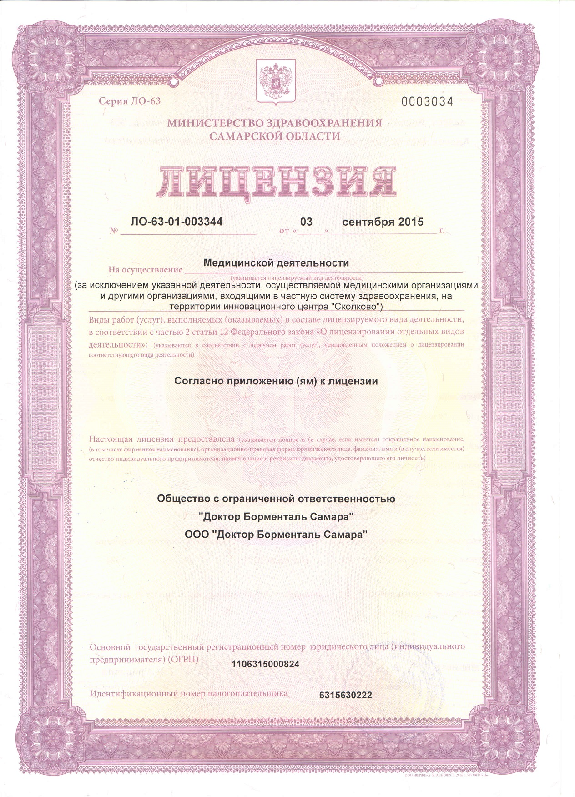
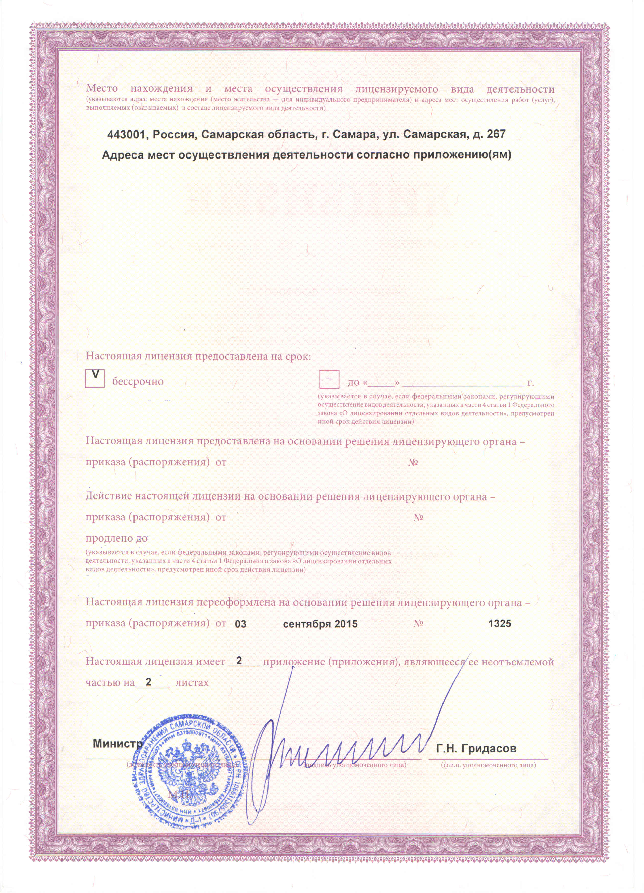
Медицинская лицензия
Выдана 3 сентября 2015 года ООО «Доктор Борменталь Самара». В диалоге доступны оба скана в полном размере.
Отзывы
После консультации выбрала игольчатый RF; отмечает более подтянутую кожу, уменьшение мелких морщин и пигментных пятен; благодарит Александру Филатову за внимательность и индивидуальную схему.
Отзыв на ПроДокторовПри чувствительной коже получила индивидуальную программу с игольчатым лифтингом; пишет о более гладкой коже, менее заметных порах и морщинах; отмечает диагностику и советы Александры Филатовой.
Отзыв на ПроДокторовОбратилась из-за нечёткого контура, покраснений и морщин; после подобранного плана отмечает более чёткий контур и отсутствие покраснений; хвалит объяснения Лилии Сенькиной и сервис клиники.
Отзыв на ЯндексеПеред консультацией
Выбирать аппарат заранее не требуется. На консультации специалист сопоставит запрос с состоянием кожи и тканей, показаниями, ограничениями и приемлемым сроком восстановления.
Ощущения зависят от метода, зоны и индивидуальной чувствительности. Возможны тепло, покалывание или ощущение проколов; их интенсивность врач обсуждает до процедуры.
Необходимость и вариант обезболивания зависят от выбранного метода и медицинских ограничений. Для процедур с проколами врач может предложить местную анестезию после очной оценки.
После воздействия возможны временные покраснение, отёк, чувствительность, а при процедурах с проколами — более заметная реакция кожи. Характер и продолжительность восстановления индивидуальны.
Число процедур или сеансов зависит от метода, зоны, исходного состояния и реакции тканей. Персональный план составляют после осмотра; заранее фиксированного курса для всех пациентов нет.
Срок зависит от метода и восстановления. Слишком раннюю оценку может искажать временный отёк, поэтому врач заранее объясняет, когда корректно сравнивать изменения.
Запись на бесплатную консультацию
С 2004 года косметологическую клинику посетили более 22 000 человек. Познакомьтесь с возможностями современной косметологии и вы.